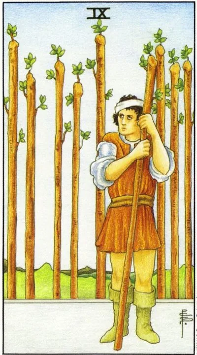

Minor Arcana · Wands
IXNine of Wands
A wounded fighter on the final line: strength is running out, wound experience has become armor, and victory is closer than it seems.
Archetype and core meaning
A fighter with a headband rests on a baton and guards the camp: nine battles behind, another onslaught ahead. Nine wands are the card of the last jerk: fatigue is real, but surrender would be a mistake, because the goal is almost achieved.
The hero's bandage says something important: he survived and learned a lesson, his caution is a memory of price, not cowardice. The card respects that mature vigilance. Ask for support if necessary, but keep your distance: what you held on to is about to pay off.
Daily life
The day is checked before the finish: the repairs are almost complete, the report is almost ready, the series of cases is almost closed. If you want to drop in the middle, do not give in. Break the rest in a portion and go one by one. In the evening, note the past: you are further than you feel.
Work and career
The business marathon is on the last lap: the project is given up, the negotiations require final pressure, the competitors make final attacks, you have the advantage of experience, base, reputation, hold on, do not open new fronts, and after the surrender take a real rest.
Relationships
Old wounds make themselves felt: the partner has to prove that he is not from a past nightmare. Sometimes the card shows a person who, after pain, closed himself and defends himself against the one who loves. The wall once protected, now it is a prison - give the loved one a chance not to repeat another's mistake.
Health
Recovery from illness or prolonged stress is ongoing, but there is no full form: residual effects, fatigue, dosing the load and making sure to complete the treatment, and that's when many people drop out of therapy and roll back, and caution is a form of respect for the body.
Spiritual meaning
Guardian Warrior: The power gained through trials becomes a talisman. The card is about species protection practices, memory of trials, working with teachers through pain. Initiation is almost complete, the final test is left. Carrying your scars with dignity is also a magical act.
Siege without meaning: defense has become paranoia, forces are exhausted, man is fighting with the shadows and sees no help.
Archetype and core meaning
War goes on because it's the way it is: a man has forgotten what he's protecting, but he can't stop. Every neighbor is an enemy, every pause is a trap. Sometimes it's true that it's a long-lasting siege, more often defensive automatism that has outlived its cause.
The second story is a fall in the last meter: nine stages are sustained, the tenth is failed not by enemies, but by exhaustion and unwillingness to ask for help. The pride of a wounded fighter is an expensive luxury. The card asks: are you defending life or the habit of holding the defense? Sometimes the courage to lower the staff and take up the hand.
Daily life
Standby mode: noises annoy, questions are perceived as attacks, a breakdown causes a storm, relatives tiptoe and you're sure they created the tension, admit fatigue out loud - for one thing, one honest evening without defense lowers the degree better than a weekend.
Work and career
"Only I Can" has taken it to the limit: you hold everything, you don't trust anyone, you work hard and you get stuck on your colleagues, and the project is stuck. Delegate at least the periphery, fix the boundaries of the day, otherwise the next conversation will not be for the result, but for the tone.
Relationships
The partner gives up: attempts at intimacy are broken against a wall of checks and reproaches; one is eternally wounded, the other is eternally guilty; love does not require you to stop taking care of yourself; it asks you to distinguish the present person from the old pain; it asks you to end the war with the ex more honestly than to fight the innocent.
Health
Chronic fatigue has turned into exhaustion: sleep is not restoring strength, immunity is failing, old injuries are exacerbating, the body has long signaled surrender, but you wrote it down as weakness, you need a doctor's check, a leave of absence and cancellation of part of the obligations - otherwise it will end in a hospital bed.
Spiritual meaning
The guard who forgets who he's watching: shields are lined up against everyone, including helpers, defenses are automatic, old attachments to grievances and birth survival programs around. Start with security clearance: a world where you can take off your armor at least for the night exists.
🌿 How the school reads this rank
The main idea
"Fight back, breathe out": all attacks are repulsed, but the person is standing guard with his head bandaged -- it's not the end of it. The confidence that if they go again, I can handle it.
How it manifests
It's a finish line project, everything you can do is done, a break before the final jump, and in a relationship, a quiet period after a conflict has been resolved, but with the understanding that "the calm before the storm" is about building strength and looking to the future.
The shadow side
Indecision and procrastination: the fire freezes too much - "another cup of coffee, then I'll work", the report is rechecked nine times, and it's scary to carry.
Keywords
They fought back and exhaled; run before jumping; beware; defend themselves; give tomorrow.
📜 In detail — from the rank lecture
Essence of the card
"Fight back, breathe out": all the enemy attacks -- other people's desires, changes in the situation (seven, eight) -- are reflected. But the person is alert, the head is bandaged: this is not the finale. There is a confidence that if they attack again, I will cope again.
Upright position
Work: project in the finish line; all that could be done was done. Now pause: run before the final jump, hold your breath before the dive, gain strength before the top ten.
Border protection: in the seven you defend your desire and your land, in the nine you come to the fore – you defend yourself, your beliefs, your personality.
Fire is always a development: there is no complete peace, “something else will be” is a look into the future and accumulation of energy before the next projects.
Relationships: a calm period after the problem is solved, but the “calm before the storm” – you think about what points on i should be placed in the top ten.
Negative meaning
Indecision and procrastination: the fire freezes too much. "I'll flip through another tape, I'll work on it later"; the report is rechecked nine times and it's scary to carry; an important conversation with your partner is postponed — "Scarlett: I'll think about it tomorrow." If your breath is aligned, move to ten, there's nothing to hang in pause.
School emphases and distinctive points
- Rank logic: eight – rhythm and movement (“to follow the stations”), nine – “thank God they fought back from these changes”, pause before the final jerk.
- Wands in the background like a palisade - a person's body covers what he protects; a trace of blood on his sleeve - "farewell", victory is not without losses.
- “No bad cards”: straight – justified pause, inverted – slowing down before the decisive jerk.
- In the layouts: the card of the day for work questions - "the project is nearing the end, do not stop, but do not panic"; inverted - "the client, it's time: the partner is long ready to find out, and you are hanging in pause."
Keywords
They fought back, exhaled, ran before the jump, guarded, defended, paused before the jump, procrastinated, not today, let’s go tomorrow.